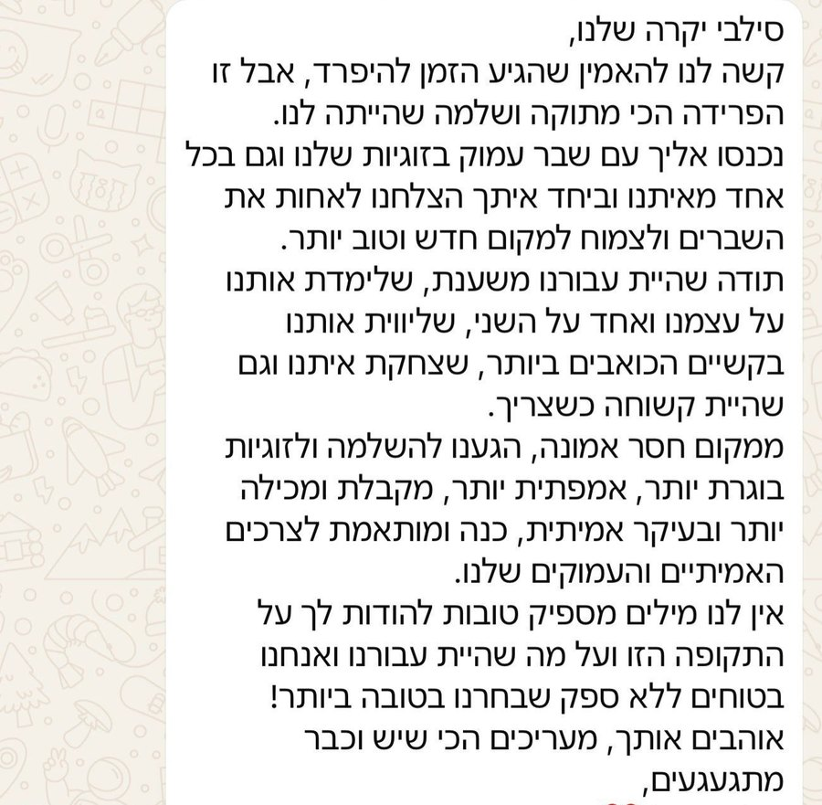
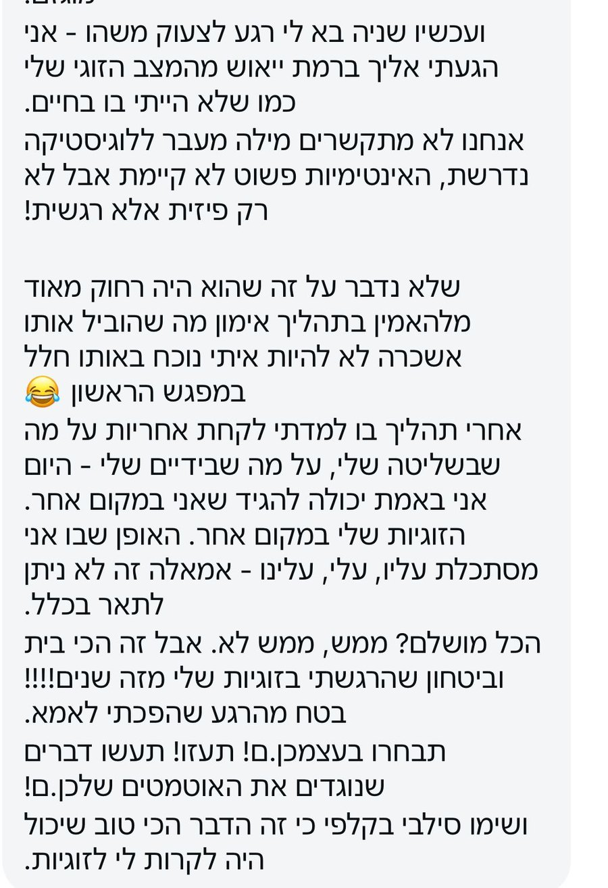
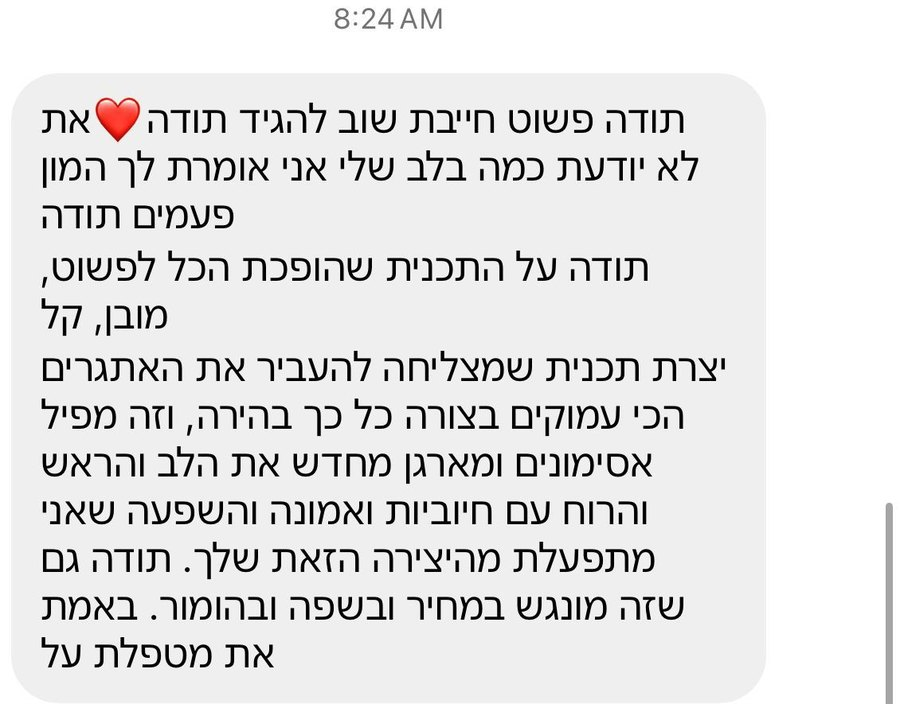

כי זוגיות טובה היא לא זוגיות שאין בה ריבים. היא זוגיות שיודעת לעשות קאמבק.
רוכשים, ומקבלים קישור לצפייה מיד. בלי לחכות לתאריך.
אפשר לצפות שניכם יחד, ואפשר כל אחד בזמן שלו. שתי הדרכים עובדות.
90 דקות, מתוכננות כך שתוכלו לצפות כבר הערב וליישם מיד. השבועיים הם כדי שתוכלו לחזור אליה, לא כדי ללחוץ עליכם.
זה לא בשבילכם אם אתם מחפשים ערב שבו יגידו לכם שהכול באשמת הצד השני, או פתרון קסם שמסדר הכול בלחיצת כפתור.



לגמרי. אפשר לצפות לבד, ואפשר ביחד. הכלים שתקבלי עובדים גם כשרק צד אחד מתחיל להשתמש בהם, כי הם משנים את מה שקורה בשיחה, לא את מי שיושב מולך.
אתם לא צריכים לחכות ששניכם תהיו באותה רמת מוטיבציה כדי להתחיל לשנות את הדרך שבה אתם נכנסים ויוצאים מקונפליקט. כשצד אחד משנה את חוקי המשחק, הדינמיקה כולה משתנה.
אף אחד. זו הרצאה מוקלטת שאתם צופים בה מהבית. אין שיחת זום, אין משתתפים אחרים ואף אחד לא יודע שרכשתם.
מתי שנוח לכם. הגישה נפתחת מיד אחרי הרכישה ונשארת פתוחה שבועיים. אפשר לעצור באמצע ולחזור.
מצוין. ההרצאה הזאת הכי עוזרת דווקא לפני שזה נהיה נורא, כשעוד קל להחזיר.
זה לא טיפול. אין פה חדר, אין פה מי־צודק, ואף אחד לא ינתח אתכם. זו הרצאה שמלמדת מיומנות, כמו שיעור ולא כמו פגישה.
90 דקות. אפשר לצפות ברצף, ואפשר לעצור ולחזור. היא בנויה כך שתוכלו לצפות בה כבר הערב וליישם כבר בריב הבא.
צופים הערב. משתמשים בזה בפעם הבאה.
כשאתם יודעים לעצור, לחזור ולתקן, הוא הופך לעוד משהו שאתם יודעים לעבור ביחד.
וזה משנה לא רק את הריב הבא. זה משנה את מה שקורה בבית בין הריבים.
🔒 תשלום מאובטח. הפרטים שלך שמורים.